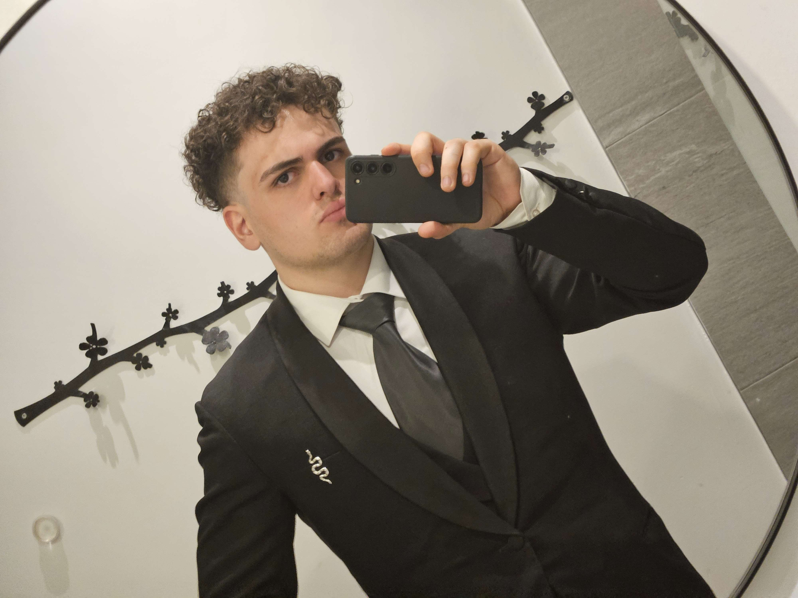

About Me
I am a focused Game Designer and Front-End Developer dedicated to creating emergent, player-driven experiences and highly optimized systems. By combining systemic design methodologies within engines like Unity with robust, I am always learning something new wether it be a new language or a new tool.

I have been interested with Video Games and Technology from a young age. Even in my youth I was facinated by the idea of being able to create and design games. My passion for video games has only grown since then and now my love for coding has pushed me to branch out into the field of Front-End Development.
Featured Dev Work


My professional toolkit has been heavily reinforced by formal university modules and independent development milestones. To see a detailed timeline of my subjects, majors, and specialized external certifications, you can explore my detailed Experience profile, or check out my live interactive development cards directly on the Projects page.